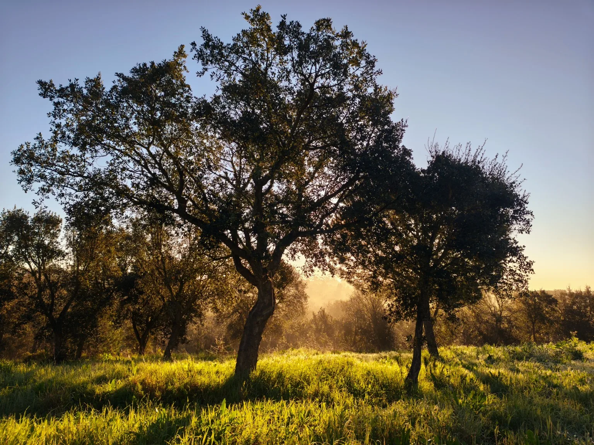
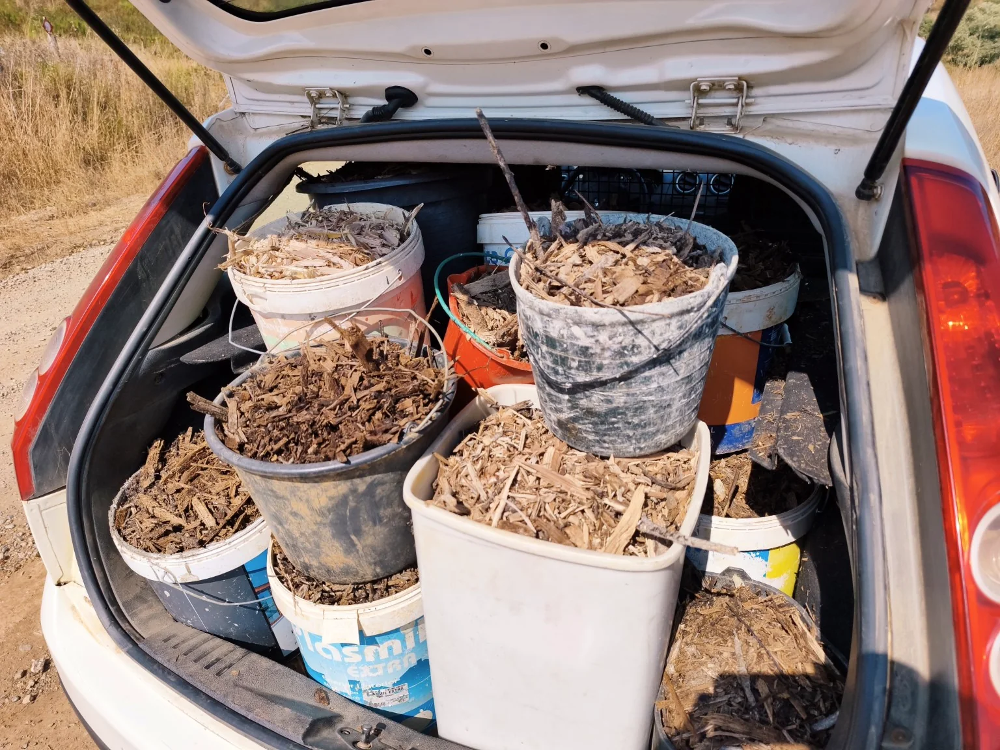

Fund it
Cash raised
Target €30,000
€0€5.5k€15k€27k€30k
€0of €30,000
Next milestone: €5,500 — Secure the course.
In the Alentejo, we are turning one real piece of land into a living demonstration of what can happen when people, knowledge and resources meet — for healthier soil, more water, greater fire resilience and livelihoods that do not depend on exhausting the land.
This page is designed to show the build as it happens. Cash funds the commitments we cannot replace. Equipment partnerships reduce what we need to buy and leave useful infrastructure on the land.
There is land. There is life. There is possibility. But much of the infrastructure that makes learning, building and hosting people possible still has to be created.
We do not want to hide that stage. It is part of the point. Terra-Be-Utopia is about showing what regeneration looks like before the beautiful “after” picture exists — the decisions, mistakes, learning, relationships and work that make change real.

The first major course is not the end product. It is the moment that brings knowledge, people, tools and practical implementation together. We want to learn from people who have spent decades doing this work, then turn that experience into something visible and useful here.
Experienced educators and practical learning.
Hands-on implementation on the land.
What works, what fails and what changes.
Make the learning useful beyond this place.
Let the next course start where this one ends.
Deposit, travel and the first commitments needed to set the course in motion.
The educational programme and educator costs are financially secured.
Water, kitchen, sanitation, classroom, tools, helpers and essential logistics.
Room for transport, technical requirements and the unexpected without cutting essential corners.
What we build becomes the starting point for the next course, the next experiment and the next season on the land.
For manufacturers, growers, suppliers and practical partners, this is an opportunity to put useful equipment into a real regenerative demonstration project — where it can be used, tested, documented and seen.
There is more than one way to build something. We need practical people, technical people, creative people and people willing to learn alongside us.

One of our deepest goals is to make regeneration practical for farmers and landowners — not as an ideal that asks them to choose between ecology and income, but as a way of protecting the very resource their livelihood depends on.
In a dry, fire-prone region like the Alentejo, that means learning how to design for water abundance, healthier soils, productive landscapes and greater fire resilience. It also means questioning the idea that safety must always come from repeatedly stripping or ploughing the land bare.
We are not pretending to have all the answers. That is precisely why we want to work with experienced practitioners, test approaches on real land, measure what happens and make the learning visible.
Terra-Be-Utopia connects land, people, knowledge and resources to regenerate living systems — one real project at a time.
Monte Ventosa is where this first demonstration begins. It is not intended to be the only model, and it is not the end of the story. What matters is creating places where people can see, learn, adapt and carry useful ideas into their own farms, homes, communities and landscapes.
Maybe you know a solar company. A farmer. A foundation. A regenerative educator. A journalist. A manufacturer. A person who would understand immediately why this matters.
Open a door. We will take it from there.

Every contribution moves the needle.